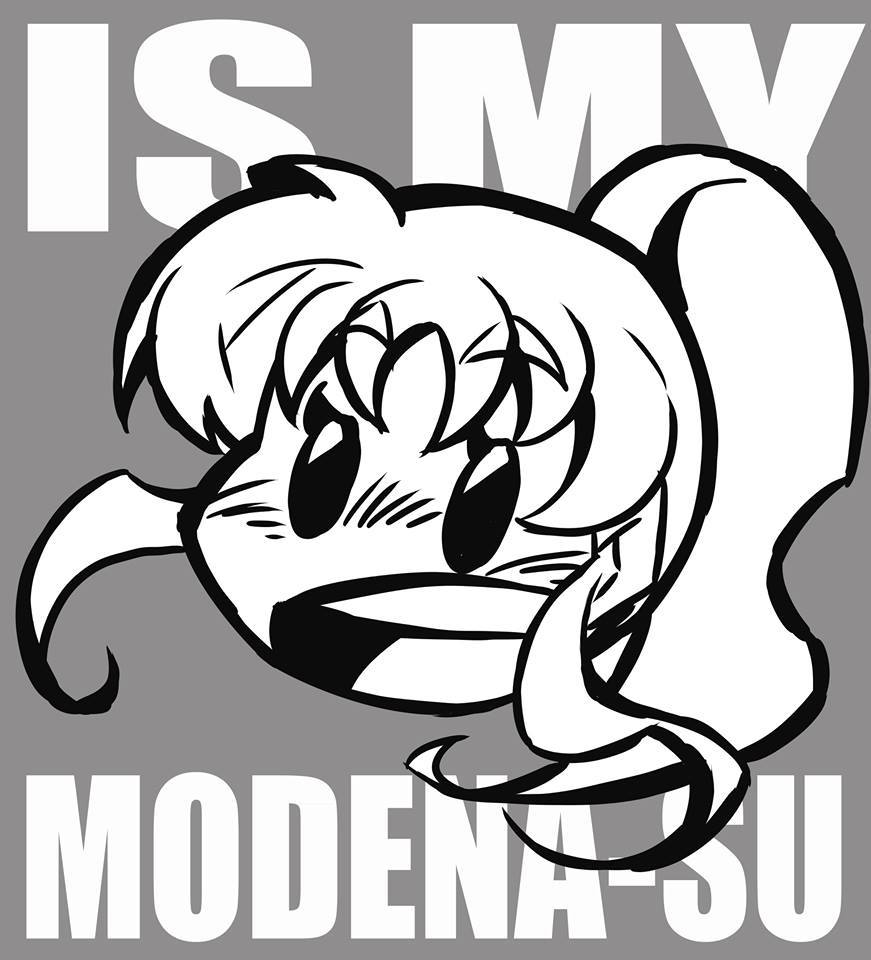

|
||
|  |
Editorial Argentina de jóvenes autores. El principal objetivo es promover la publicación, venta e incentivar el consumo del manga local. |
|
Fundador
Fernando Biz, dibujante de historietas, Guionista, jugador casual de video juegos y mirador compulsivo de anime. Creador de Bienvenidos a República Gada, Hot Lady Nadia y Dibujante de Femme. |
Catálogo |
Dónde Comprar
|